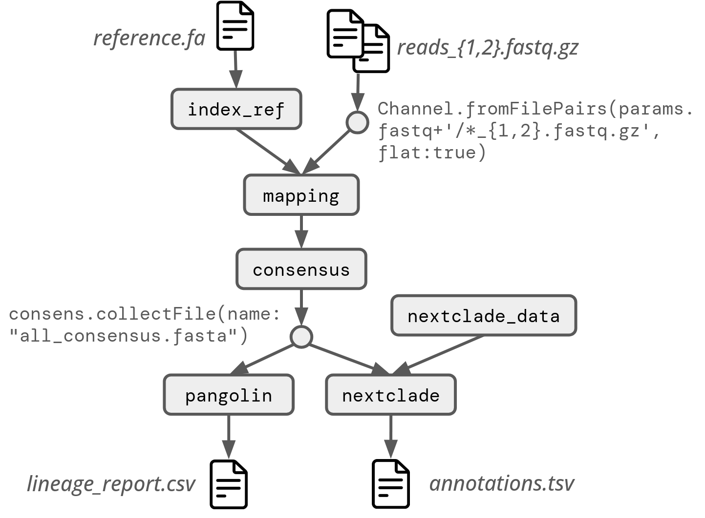

An ACM Rep 2025 tutoriel
In an era of generation of large datasets and complex scientific analyses, ensuring the reproducibility of data analyses has become paramount. Workflow management systems have emerged as a key solution to this challenge. By managing the software environment, task scheduling, parallelisation and communication with the execution machines (HPC, cloud, etc.), they significantly facilitate workflow development compared to historical practices (e.g., simple bash scripts), all while ensuring scalablility and a high level of reproducibility [2]. However, while they are becoming more popular, workflow management systems have not yet gained wide adoption within the scientific community, largely due to established practices and the perceived high learning curve associated with their use.
This tutorial aims at demonstrating the critical role of workflow management systems in implementing reproducible data analyses, with an emphasis on their capacity to encapsulate heterogeneous code, manage software environments, scale with the data size, and leverage heterogeneous computational resources efficiently. To do so, we will use the Nextflow [1] workflow system and a viral genome sequence reconstruction pipeline as a use case. This will demonstrate the fundamentals of Nextflow and illustrate how it can be used to easily implement, execute, and share a simple workflow.
Key learning outcomes include (i) acquiring basic workflow concepts (ii) learning how to implement simple workflows and (iii) understanding the capabilities of workflow management systems in encapsulating heterogeneous code, scalability, software environment management, and computational resource management. The tutorial will be organized in three phases.
By the end of the tutorial, participants will have a solid foundation in workflow management systems and be capable of designing and implementing reproducible data analysis workflows, aligning with the broader goals and themes of ACM REP 2025.
Link to the lecture slides can be found here.
The goal is to analyse a SARS-CoV-2 sequencing dataset, in order to:
To do so we will start from a sample that has been sequenced on an Illumina sequencer, and we will run the following steps:
The resulting workflow should look like this:

It consists of:
Command lines:
Indexing the reference genome:
bwa index reference.fa
Mapping the reads:
bwa mem -t 1 reference.fa reads1.fq reads2.fq > tmp.sam
Converting sam file to bam file:
samtools sort -o sample.bam tmp.sam
samtools index sample.bam
samtools mpileup -A -d 600000 --reference reference.fasta -B -Q 0 sample.bam | ivar variants -r reference.fa -p sample.variants -q 0 -t 0.02
samtools mpileup -d 600000 -A -Q 0 -F 0 sample.bam | ivar consensus -q 20 -t 0 -m 5 -n N -p sample_consensus
Bla bla diferrence between nexclade and Pangolin
Detecting clade (NextClade)
nextclade dataset get --name 'sars-cov-2' --output-dir 'ncref'
Detecting clade (Pangolin)
PATH=/opt/conda/envs/pangolin/bin/:\$PATH
pangolin --usher 'sample_consensus.fa' -t 20 --outfile Pangolin_lineage_report.csv
Here are the list of tools you will need in the workflow with a corresponding container to use them:
| Tool | Container |
|---|---|
| samtools | evolbioinfo/samtools:v1.11 |
| iVAR | evolbioinfo/ivar:v1.3.1 |
| Nextclade | nextstrain/nextclade:3.13.3 |
| Pangolin | evolbioinfo/pangolin:v4.3.1-v1.33-v0.3.19-v0.1.12 |
| bwa | evolbioinfo/bwa:v0.7.17 |
After running the workflow, we can analyse the resutls
A correction workflow will be added to the repo at the end of the tutoriel
Link to reproducibility consensus workflow can be found here